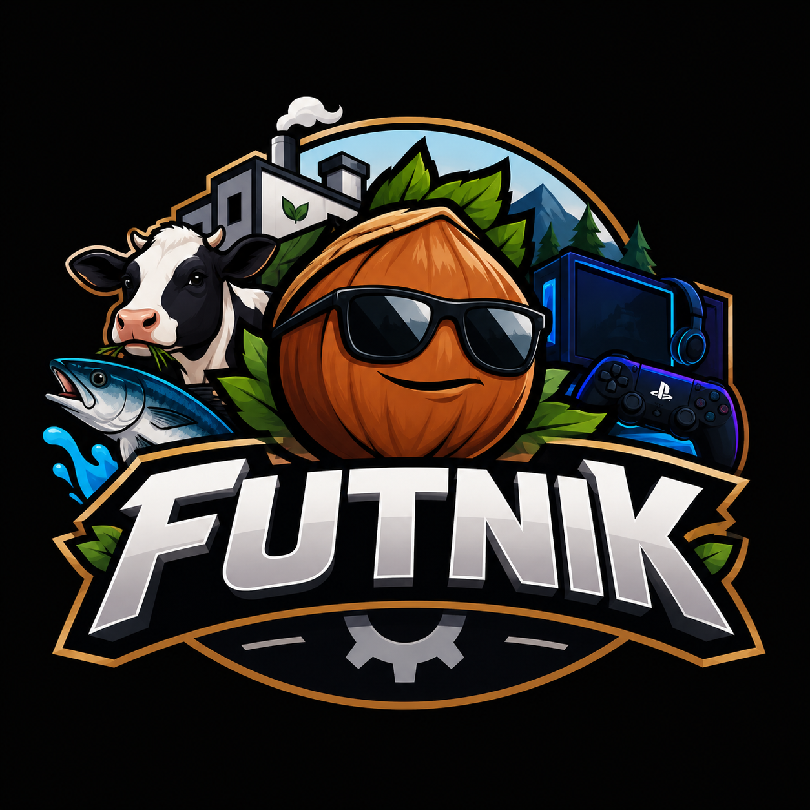

Fındık Kabuklama
Karadeniz menşeli yüksek performanslı fındık işleme ve kabuk ayırma operasyonu.

FUTNIK ÜRETİM TESİSLERİFutnık; fındık, hamsi, PlayStation, hayvancılık ve profesyonel e-spor yatırımlarını aynı kurumsal ciddiyetsizlik altında birleştiren yeni nesil üretim ağıdır.
Her birim kendi alanında lider. Neden var oldukları ise yönetim kurulunca hâlâ araştırılıyor.
Karadeniz menşeli yüksek performanslı fındık işleme ve kabuk ayırma operasyonu.
Hamsinin doğru zamanda doğru yere ulaştırılması. Detaylar stratejik sırdır.
Geleneksel hayvancılığa modern, son derece ciddi ve hafif gereksiz bir yaklaşım.
PlayStation kafe altyapısı, kol yönetimi ve profesyonel maç öncesi hazırlık.
Yeni nesil oyuncuların yetiştirildiği, refleks ve ego ölçümünün yapıldığı merkez.
Yeni ve daha gereksiz üretim fikirlerinin test edildiği yüksek riskli laboratuvar.
Fındık, hamsi ve diğer kritik kaynakların operasyonel planlaması.
Oyuncu yetiştirme, takım kurma ve gereksiz derecede ciddi turnuva hazırlığı.
Rekabetçi oyun ortamı ve profesyonel kol kullanım denetimi.
İnek sağımından yem yönetimine kadar tam kapsamlı tesis hizmetleri.
Futnık operasyon merkezi, tesislerde gerçekleşen tüm anlamsız ama stratejik faaliyetleri tek ekranda izler.